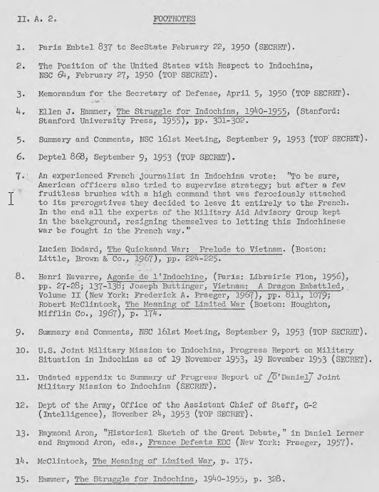

Mục lục
°° ở đây chữ liverage, tôi dịch là sức bẩy hay thế thượng phong trong nghĩa là khi hai đối tác thương thảo một chuyện gì thì anh nào trên cơ anh nào
1. Sức bẩy của Hoa Kỳ đối với Pháp
a. NATO và Marshall Plan
b. Chương trình hỗ trợ quân sự
c. Hoa Kỳ hỗ trợ độc lập cho ba nước Đông Dương
d. Giới hạn về thế thượng phong của Mỹ
2. Sức bẩy của Pháp đối với Hoa Kỳ.
A-35
A-35
A-35
A-37
A-38
A-38
A-38
A-39
A-40
A-40
A-41
Đôi khi có thể khẳng định rằng Pháp không thể tiếp tục cuộc chiến ở Đông Dương mà không cần viện trợ Mỹ, nhưng Hoa Kỳ không sử dụng sức bẩy [thế] đáng kể này buộc người Pháp phải thực hiện các bước tích cực hơn đối với quyền độc lập hoàn toàn của các nước liên bang. Kiểm tra lại mối quan hệ Pháp-Mỹ từ 1950-1954 cho thấy, mặc dù vậy, sức bẩy của người Hoa Kỳ đã bị hạn chế một cách nghiêm trọng và, do ưu tiên trong chính sách của Hoa Kỳ là ngăn chặn chủ nghĩa cộng sản ở Đông Nam Á, sức bẩy của Pháp so với Hoa Kỳ là mạnh hơn.
1. Sức bẩy của Hoa Kỳ đối với Pháp
a. NATO và Marshall Plan
Trong thập kỷ đầu sau chiến tranh, Pháp tương đối yếu và phụ thuộc vào Hoa Kỳ thông qua NATO và Kế hoạch Marshall cho an ninh quân sự và sự phục hồi kinh tế. Tuy nhiên, không phải NATO cũng như Kế hoạch Marshall có thể [giúp Mỹ] sử dụng như điểm tựa để ảnh hưởng lên chính sách của Pháp về Đông Dương. Cả hai đều được Chính phủ và công chúng Hoa Kỳ đánh giá mạnh mẽ là lợi ích quốc gia của Hoa Kỳ vào thời điểm mà sự đe dọa từ Liên Xô lên các nước Tây Âu, qua xâm lược công khai hay lật đổ nội bộ, đã được rõ ràng nhận ra. Một nước Pháp bị cộng sản nắm là một khả năng thực sự. (Đảng Cộng sản Pháp là đảng chính trị lớn nhất trong cả nước, và vào thời điểm đó, mang tính chiến đấu cao). Như vậy, chuyện Hoa Kỳ đe dọa rút hỗ trợ quân sự và kinh tế nếu Pháp không thay đổi chính sách của họ ở Đông Dương là không thích đáng. Việc đe dọa Pháp với biện pháp trừng phạt trong NATO hoặc thông qua Kế hoạch Marshall sẽ làm hư hại lợi ích của Hoa Kỳ ở Châu Âu là điều quan trọng hơn bất kỳ chuyện gì khác ở Đông Dương.
b. Chương trình hỗ trợ quân sự
Nguồn ảnh hưởng chính còn lại là các chương trình viện trợ quân sự cho Pháp ở Đông Dương. Ngày 08 tháng 5 năm 1950, đáp ứng một yêu cầu khẩn cấp của Pháp ngày 16 tháng hai năm 1950, Tổng thống Truman công bố viện trợ quân sự và kinh tế mà mục đích là để giúp đỡ người Pháp trong việc tiến hành cuộc chiến chống lại Việt Minh. Sau đó, đại sứ Hoa Kỳ ở Paris được gọi đến Quay d'Orsay [trụ sở của Bộ Ngoại Giao Pháp], để nghe chính phủ Pháp xác định rằng "phải nói rõ với Chính phủ Hoa Kỳ một cách đầy đủ và thẳng thắn rằng tình hình Đông Dương là cực kỳ trầm trọng theo quan điểm của Pháp căn cứ trên kết quả của những diễn biến gần đây và ước đoán rằng ít nhất Cộng sản Trung Quốc sẽ tăng cường viện trợ quân sự cho Hồ Chí Minh”. Ông [Truman] nói:
"... Rằng nỗ lực ở Đông Dương là một tiêu hao cho Pháp, rằng một chương trình hỗ trợ dài hạn là cần thiết và những hỗ trợ ấy chỉ đến từ Hoa Kỳ, nếu không... rất có thể Pháp có thể sẽ phải xét lại toàn bộ chính sách của mình để rút khỏi Đông Dương hầu tránh bị tiêu hao... nhìn vào tương lai, điều ấy là rõ ràng... rằng Pháp không thể tiếp tục chịu gánh nặng này một mình vô thời hạn nếu dự đoán về vấn đề tăng hỗ trợ cho Hồ Chí Minh [từ Trung Cộng] đã thành sự thật... " 1/
Mặc dù quyết định mở rộng viện trợ cho các nỗ lực quân sự Pháp ở Đông Dương đã được thực hiện trước khi chiến tranh Triều Tiên bùng nổ, rõ ràng là [tình hình] bị ảnh hưởng nặng nề bởi sự sụp đổ của Trung Hoa Quốc Dân Đảng, và sự xuất hiện của quân đội Cộng sản Trung Quốc cạnh biên giới Đông Dương vào tháng Mười Hai năm 1949. Chế độ Hồ Chí Minh được công nhận là chính phủ hợp pháp của Việt Nam bởi Cộng sản Trung Quốc vào ngày 18 Tháng 1 năm 1950 và mười hai ngày sau, Chính phủ Liên Xô, tương tự, công bố công nhận. Hội Đồng An Ninh Quốc Gia [NSC: National Security Council] liền sau đó được yêu cầu "lấy quyết tâm dùng tất cả các biện pháp thực tế của Hoa Kỳ để bảo vệ an ninh ở Đông Dương và để ngăn chặn việc mở rộng xâm lược của cộng sản trong khu vực đó." Văn bản số NSC 64 (27 Tháng Hai 1950) kết luận rằng:
"Điều quan trọng cho lợi ích an ninh của Hoa Kỳ là tất cả các biện pháp thực tế đều được dùng để ngăn chặn cộng sản tiếp tục mở rộng thêm ở Đông Nam Á. Đông Dương là một khu vực quan trọng của khu vực Đông Nam Á và hiện nay đang bị đe dọa.
"Các nước láng giềng Thái Lan và Miến Điện được dự kiến có thể sẽ bị Cộng sản thống trị nếu Đông Dương đã bị kiểm soát bởi một chính quyền cộng sản. Sự cân bằng của khu vực Đông Nam Á, sau đó, sẽ bị nguy hiểm nghiêm trọng." 2/
Bộ Tổng Tham Mưu, tham chiếu ước tính tình báo ngày 5 tháng tư năm 1950 cho thấy rằng tình hình ở Đông Nam Á đã xấu đi, lưu ý rằng "không trợ giúp của Hoa Kỳ, sự suy giảm này sẽ bị đẩy mạnh." 3/ Vì vậy, lý do cho quyết định hỗ trợ Pháp là để ngăn chặn Đông Dương khỏi trượt vào khối cộng sản, chứ không phải viện trợ cho Pháp như một quyền lực thực dân hoặc một đồng minh NATO thân thích.
Mỹ hỗ trợ, bắt đầu khiêm tốn với 10 triệu USD vào năm 1950, đạt $ 1.063 triệu trong năm tài chính 1954, ở "thời gian đó nó chiếm 78% chi phí gánh nặng chiến tranh của Pháp. Phần chính của sự gia tăng trong năm cuối cùng của cuộc chiến, sau khi Kế hoạch Navarre được trình bày năm 1953 là kêu gọi mở rộng lực lượng Pháp-Việt và một chiến lược năng động để lấy lại thế chủ động và mở đường cho chiến thắng vào 1955. Kế hoạch Navarre được Trung Tướng John W. O'Daniel, người đứng đầu của MAAG ở Đông Dương lạc quan ủng hộ như là một kế hoạch có khả năng xuay ngược tình thế và dẫn đến một chiến thắng quyết định trên Việt Minh đã góp phần khiến Washington thỏa thuận nâng cao đáng kể mức độ hỗ trợ. Nhưng quan trọng không kém, kế hoạch Navarre, là một đề nghị cụ thể có đưa ra lời hứa kết thúc một cuộc chiến dài, đã đặt Pháp ở vị trí áp lực Hoa Kỳ cung cấp nhiều tiền hơn để chi trả cho việc đào tạo và trang bị thêm chín tiểu đoàn Pháp và một số đơn vị mới Việt Nam.
c. Hoa Kỳ hỗ trợ độc lập cho ba nước Đông Dương
Trong suốt thời gian hỗ trợ cho các nỗ lực quân sự Pháp, các nhà hoạch định chính sách của Hoa Kỳ luôn giữ trong tâm trí sự cần thiết phải khuyến khích người Pháp trao độc lập hoàn toàn cho các quốc gia liên hiệp và có các biện pháp thiết thực theo hướng này, chẳng hạn như đào tạo cán bộ, công chức dân sự Việt Nam. Như vậy những động tác thuyết phục trở nên tinh tế và khó khăn do tính nhạy cảm cao của người Pháp đối với bất kỳ "can thiệp" nào đối với các vấn đề "nội bộ".
Đọc lại các bản ghi nhớ của Hội Đồng An Ninh Quốc Gia [NSC] và các đối thoại ngoại giao Pháp-Mỹ vào thời gian đó cho thấy rằng Washington luôn để mắt theo sát mục tiêu cuối cùng là việc giải thể chế độ thực dân ở Đông Dương. Thật vậy, thật không thoải mái thấy mình – bị bó buộc vì sự cần thiết phải chống lại Việt Minh cộng sản – phải nằm chung giường với người Pháp. Áp lực của Hoa Kỳ cũng có thể giải thích được qua tuyên bố công khai của Thủ tướng Joseph Laniel [Pháp] ngày 03 Tháng bảy 1953, là sự độc lập và chủ quyền của các nước liên minh sẽ được "hoàn thiện" bằng cách chuyển giao cho họ các chức năng khác nhau mà vẫn còn dưới quyền kiểm soát của Pháp, mặc dù không có hạn cuối cùng đặt ra cho độc lập hoàn toàn. 4/ Tại một cuộc họp NSC vào ngày 6 tháng 8, năm 1953 Tổng thống Eisenhower tuyên bố rằng sự hỗ trợ của Pháp sẽ được xác định bởi ba điều kiện:
Phù hợp với các quyết định của mình, ngày 09 tháng chín 1953 Washington cấp $385 triệu cho việc thực hiện Kế hoạch Navarre, phụ thuộc vào một số điều kiện. Đại sứ Hoa Kỳ đã được chỉ thị thông báo cho Thủ tướng Laniel và Ngoại trưởng Bidault rằng Chính phủ Hoa Kỳ mong chờ Pháp:
"... Tiếp tục theo đuổi chính sách hoàn thiện nền độc lập cho ba nước Đông Dương phù hợp với tuyên bố ngày 03 tháng 7;
"tạo điều kiện thuận lợi cho việc trao đổi tin tức với các cơ quan quân sự Hoa Kỳ và quan tâm đến ý kiến của họ [Mỹ] trong việc tiến hành và thực hiện kế hoạch quân sự Pháp ở Đông Dương.
"đảm bảo rằng sẽ không có những thay đổi cơ bản hoặc lâu dài về những kế hoạch và chương trình của các lực lượng NATO lấy cớ là do hậu quả các nỗ lực bổ sung [của Pháp] ở Đông Dương; 6/
d. Giới hạn về thế thượng phong của Mỹ
Hoa Kỳ đã cố gắng sử dụng chương trình viện trợ quân sự để đạt thế thượng phong trên chính sách của Pháp, nhưng bị hạn chế nghiêm trọng cho những gì Hoa Kỳ có thể làm. Phái đoàn quân sự Hoa Kỳ (MAAG) ở Sài Gòn là nhỏ và giới hạn bởi người Pháp trong chức năng cung cấp viện trợ của mình. Phân bổ tất cả các viện trợ Hoa Kỳ cho ba nước Đông Dương đã được thực hiện, theo thỏa thuận, chỉ duy nhất thông qua Pháp. Vì vậy, MAAG không được phép để kiểm soát việc phân phát vật tư một khi họ đến Việt Nam. Cán bộ MAAG không được tự do cần thiết để tìm hiểu thông tin tình báo về quá trình chiến tranh, thông tin được cung cấp bởi người Pháp là giới hạn, và thường là không đáng tin cậy hoặc cố tình hướng dẫn sai. Người Pháp phản ứng lại lời nhắc nhở của Hoa Kỳ rằng quân đội bản địa ba nước Đông Dương đã được xây dựng và do đó không cần tạo ra một quân đội Việt quốc gia thật sự. Với một số ngoại lệ nhỏ, Pháp đã loại trừ cố vấn Hoa Kỳ tham gia vào việc huấn luyện sử dụng các vật liệu cung cấp bởi Mỹ.
Tướng Navarre, đã xem bất kỳ chức năng nào của MAAG [Military Assistance Advisory Group] ở Sài Gòn ngoài việc giữ sổ sách kế toán là một sự can thiệp vào công việc nội bộ của Pháp. Mặc dù Pháp rất khó khăn để tiếp tục cuộc chiến tranh qua năm 1952 mà không có viện trợ Mỹ, Pháp không bao giờ cho phép các quan chức Hoa Kỳ tham gia trong việc lập kế hoạch chiến lược hay chính sách. 7/ Hơn nữa, Pháp nghi ngờ là viện trợ kinh tế là quá thông cảm với phe quốc gia Việt Nam. Giám đốc chương trình viện trợ kinh tế, Robert Blum, và quản trị viên về nhu cầu [DCM - Demand Chain Manager] của Đại sứ quán Mỹ, Edmund Guillion, đã phải chịu những lời chỉ trích của Pháp vì quan điểm ủng hộ phía Việt Nam của họ, mặc dù đại sứ Mỹ, Donald Heath, vẫn kiên quyết ủng hộ Pháp. Vì vậy, các quan chức Pháp nhấn mạnh rằng sự hỗ trợ của Hoa Kỳ là "không có ràng buộc" và hầu như không có kiểm soát nào về việc sử dụng nó. Căn bản cho thái độ này là một sự nghi ngờ sâu xa rằng Hoa Kỳ mong muốn hoàn toàn thay thế Pháp, về kinh tế cũng như chính trị, ở Đông Dương. 8/
2. Thế thượng phong của Pháp đối với Hoa Kỳ.
Thế thượng phong của Pháp trên Hoa Kỳ có thể có được là vì một sự xác tín, dường như chắc chắn thành hình tại Washington, rằng việc duy trì một Đông Dương không cộng sản.... là tối quan trọng đối với lợi ích của phương Tây - và đặc biệt là Mỹ.
Thực tế cơ bản nhất là người Pháp đã tiến hành một cuộc chiến mà Hoa Kỳ đã xem, dù đúng hay sai, là rất cần thiết. Vì thế, luôn luôn Pháp có thể đe dọa [Mỹ] đơn giản chấm dứt cuộc chiến bằng việc rút khỏi Đông Dương. Vào đầu những năm 1950, với nhân dân Pháp mệt mỏi về "cuộc chiến nhơ bẩn," một quyết định như thế sẽ được lòng dân Pháp. Do đó có Paris thể gợi ý – và họ đã làm -- rằng nếu Hoa Kỳ hỗ trợ không tới, họ chỉ đơn giản rút lui khỏi Đông Dương, để lại Hoa Kỳ một mình lo ngăn chặn chủ nghĩa cộng sản ở Đông Nam Á. Khi Chính phủ Laniel yêu cầu vào mùa thu năm 1953 một sự gia tăng lớn về viện trợ Mỹ, đại diện Bộ Ngoại giao tại một cuộc họp của Hội Đồng An Ninh Quốc Gia [NSC] khẳng định rằng " Chính phủ Pháp, đã đề xuất chúng ta trợ giúp họ củng cố ở Đông Dương, nếu chúng ta không hỗ trợ họ tại thời điểm này, có thể là [họ là] chính phủ cuối cùng sẳn sàng một nỗ lực thực sự để giành chiến thắng ở Đông Dương". 9/ Thực vậy, sau đó, bởi vì tầm quan trọng trọng được đưa ra bởi Washington là ngăn chận cộng sản ở Đông Dương, đe dọa rút đi là một công cụ tống tiền quan trọng mà người Pháp đang sở hữu.
Kết quả của chuyện này là thế thượng phong của Hoa Kỳ là khá yếu. Kể từ khi Pháp, dù cách nào, chiến đấu một trận chiến của Hoa Kỳ cũng như của chính họ để ngăn chặn cộng sản Đông Dương, bất kỳ áp lực vụng về nào của Hoa Kỳ đều bị kế án làm suy yếu quyết tâm và khả năng của người Pháp. Do đó, thế thượng phong mà Hoa Kỳ đạt được thông qua viện trợ có thể được sử dụng một chút khác hơn là để thúc đẩy nhiều hơn hiệu quả và quyết tâm của Pháp. Nói cách khác, Washington có thể thúc đẩy Paris lên một kế hoạch kiểu Navarre, nhưng không thể ảnh hưởng đến cách Pháp tiến hành chiến tranh, cũng không thể thúc đẩy Pháp trên các vấn đề chính trị đang tranh chấp.
Cám dỗ "sát cánh" với người Pháp cho đến khi Việt Minh bị đánh bại là hấp dẫn hơn vì kỳ vọng của chiến thắng tràn ngập các giới chức Washington. Trước Điện Biên Phủ, tướng O'Daniel luôn báo cáo rằng chiến thắng là trong tầm tay nếu Hoa Kỳ tiếp tục hỗ trợ họ. Tháng năm 1954 tướng O'Daniel đệ trình một báo cáo về tiến độ của Kế hoạch Navarre trong đó tóm tắt những gì người Pháp đã làm và những gì vẫn đang thực hiện. Báo cáo nói rằng lực lượng Liên hiệp Pháp đã chủ động tổ chức và sẽ bắt đầu chiến dịch tấn công vào giữa tháng Giêng, năm 1954 ở đồng bằng sông Cửu Long và ở khu vực giữa Mũi Kê Gà ở Phú Yên [Cape Varella] và Đà Nẵng. Trong khi đó, một lực lượng tương đối nhỏ sẽ cố gắng loại Việt Minh ra khỏi vùng đồng bằng Bắc Bộ đến tháng 10, năm 1954, lúc ấy Pháp sẽ bắt đầu một cuộc tấn công quan trọng chủ yếu vào phía Bắc vĩ tuyến 19. Kết luận của báo cáo đánh giá Kế hoạch Navarre cơ bản là được và cần được hỗ trợ vì nó sẽ mang lại một chiến thắng quyết định. 10/
Niềm lạc quan của O'Daniel đã không được song hành với các nhà quan sát khác. CINCPAC [Commander in Chief, Pacific Command – Tư lệnh Thái Bình Dương], là một, cho rằng báo cáo là quá lạc quan, nêu lên rằng yếu tố chính trị và tâm lý là rất quan trọng đến nỗi không chiến thắng nào có thể có được cho đến khi Việt Nam đã có thể chiếm được các làng và cho đến khi các hoạt động chiến tranh tâm lý có thể giành được lòng người. 11/ Tùy viên quân sự ở Sài Gòn thậm chí còn ít lạc quan hơn. Ông thẳng thừng tuyên bố rằng Pháp, sau sáu tháng Kế hoạch Navarre, vẫn còn trên thế phòng thủ và không thấy có dấu hiệu có thể để giành được chiến thắng trong tương lai. Quan điểm của ông Tùy Viên, hơn nữa, được tán đồng bởi phụ tá trưởng cơ quan tình báo, ông này đã quan sát các sĩ quan cao cấp khác của quân đội Hoa Kỳ ở Đông Dương đều đồng ý với ông Tùy viên và cho rằng báo cáo của O'Daniel là lạc quan không căn cứ. 12/
Một nguồn quan trọng cho thế thượng phong của Pháp cũng đã tìm thấy được ngoài các vấn đề ở Viễn Đông. Mục tiêu chính của chính sách đối ngoại của Hoa Kỳ trong 1953-1954 tạo ra một Cộng đồng Quốc phòng châu Âu (EDC). Mục đích của EDC là để "đóng bao" quân đội Tây Đức thành một quân đội quốc gia gồm sáu quân đoàn về lâu dài sẽ góp sức vào việc bảo vệ Tây Âu. Các quan chức Washington dự kiến EDC sẽ cho phép giảm (nhưng không hoàn toàn loại bỏ) lực lượng mặt đất của Hoa Kỳ ở châu Âu. Pháp là thành viên của EDC -- một đối trọng cho ý kiến tái trang bị vũ khí cho Đức – [sự đồng ý của Pháp] là cần thiết để thông qua [ý kiến] cùng với năm quốc gia châu Âu khác. Bởi vì EDC có ưu tiên cao trong kế hoạch của Mỹ, nên Hoa Kỳ rất miễn cưỡng khi muốn phản kháng Pháp trong vấn đề Đông Dương. Điều này lại được tăng cường bởi Hoa Kỳ biết người Pháp đặt một ưu tiên thấp hơn cho EDC, một phần vì nỗi sợ hãi truyền thống của Pháp đối mặt với một nước Đức vũ trang, một phần vì tính toán của Pháp về ý định của Liên Xô ở Tây Âu khác với [tính toán] Hoa Kỳ trong đó họ rằng một can thiệp của Liên Xô trực tiếp là có xác suất thấp. 13/
Dường như đã không có sự chú ý vào thời điểm đó là mâu thuẫn tiềm ẩn trong chính sách của Hoa Kỳ nhằm thúc đẩy Pháp đồng thời để thông qua EDC và thực hiện một nỗ lực lớn hơn ở Đông Dương. Việc thứ hai đòi hỏi tăng lực lượng Pháp ở vùng Viễn Đông. Tuy nhiên, Quốc hội Pháp sẽ không chấp nhận trừ khi EDC ở mức tối thiểu, nó phải đảm bảo rằng các lực lượng Pháp ở châu Âu sẽ ngang bằng với người Đức. Do đó, Pháp đã cho rằng việc EDC thành hiệu lực sẽ ngăn cản họ đưa lực lượng lớn hơn vào Đông Dương. Sau khi bị mất miền Bắc Việt Nam và Pháp từ chối EDC, Chủ tịch của Nhóm Công Tác Liên Ngành được thành lập để xây dựng một chính sách mới của Hoa Kỳ về Đông Dương cho thời kỳ hậu Geneva nhận xét rằng "chính sách của chúng ta như vậy, đến nay đã thất bại bởi vì chúng ta đã cố gắng để bắn hai con chim với một đá và cả hai đều không trúng”. 14/
Thế thượng phong của Pháp cũng đã chứng minh bởi khả năng của họ mang vấn đề Đông Dương đặt trên chương trình nghị sự của Hội nghị Giơ-ne-vơ vào thời điểm cuộc họp của bốn Bộ trưởng Ngoại Giao vào tháng 2 năm 1954 tại Berlin. Hội nghị Giơ-ne-vơ đã được kêu gọi để tìm ra một giải pháp chính trị cho cuộc chiến tranh Triều Tiên. [Ngoại Trưởng] Dulles đã không muốn đàm phán về Đông Dương cho đến khi nào có một cải tiến đáng kể trong tình hình quân sự của Pháp và Pháp có thể thương lượng đứng trên một tư thế sức mạnh nhiều phần lớn hơn. Tuy nhiên, Chính phủ Laniel bị áp lực bởi dư luận Pháp đòi kết thúc chiến tranh Đông Dương. Tại Berlin, đoàn đại biểu Pháp khẳng định, bất chấp sự phản đối của Mỹ, Đông Dương được ghi trong chương trình nghị sự Geneva. Bộ trưởng Ngoại giao Bidault được báo cáo là đã cảnh báo rằng nếu Hoa Kỳ đã không ngầm bằng lòng ở điểm này, EDC chắc chắn sẽ bị chết chìm.
[Ngoại Trưởng] Dulles đã thành công trong việc phản đối những nỗ lực của Liên Xô để đạt được cho Cộng sản Trung Quốc quy chế cường quốc bảo trợ ở Hội Nghị Geneva và buộc phải chấp nhận trong thông cáo Berlin một tuyên bố rằng không có công nhận ngoại giao nào sẽ được ngụ ý trong thư mời Trung Quốc tham gia hội nghị. Tuy nhiên, để đổi lấy nhượng bộ này, người Pháp đã có thể đưa ra những bằng chứng dễ thấy về quan tâm của họ trong việc sớm chấm dứt chiến tranh thông qua thương lượng. Trớ trêu thay, điều này là con dao hai lưỡi: "phe hòa bình" ở Paris đã được xoa dịu, nhưng ở Hà Nội nhiều kế hoạch đã được đưa ra, đẩy mạnh cường độ chiến tranh để tạo cho mình thế mạnh quân sự trước khi bắt đầu Hội nghị Geneva. Vì vậy, chiến trường Điện Biên Phủ có một ý nghĩa rất quan trọng trong tổng thể vì vấn đề Đông Dương mới đây đã được ghép vào Hội nghị Giơ-ne-vơ. Khi Ellen Hammer đã viết:
"Đây là cơ hội cuối cùng trước khi Hội nghị Geneva [bắt đầu] để Việt Minh cho thấy sức mạnh quân sự của mình, quyết tâm chiến đấu đến thắng lợi. Và có nhiều người nghĩ rằng Tướng Giáp quyết tâm giải quyết đến chiến thắng, không kể đến giá phải trả, không chỉ để gây ấn tượng với đối phương mà còn để thuyết phục các đồng minh Cộng sản của ông là Việt Minh, bởi những nỗ lực riêng, phải có một chỗ ngồi tại bàn hội nghị và có quyền có tiếng nói cho tương lai của mình. Đối với người Pháp... kết quả của trận đánh phụ thuộc rất nhiều về tinh thần mà họ sẽ gửi đại diện đến Geneva " 15/.
Tóm lại, người ta phải chú ý về những nghịch lý trong chính sách của Hoa Kỳ đối với người Pháp về vấn đề Đông Dương, 1950-1954. Lợi ích và các mục tiêu cơ bản của Hoa Kỳ là khác với [Lợi ích và các mục tiêu] Pháp. Hoa Kỳ quan tâm đến việc ngăn chặn chủ nghĩa cộng sản và hạn chế sự lây lan của ảnh hưởng Trung Quốc ở Đông Nam Á. Mục tiêu trước mắt của Hoa Kỳ là hỗ trợ một miếng domino. Pháp, mặt khác, chiến đấu chủ yếu là một cuộc chiến tranh thuộc địa được thiết kế để duy trì sự hiện diện của Pháp ở Đông Nam Á và tránh được những đổ nát của Liên hiệp Pháp. Mặc dù thỉnh thoảng cam kết là sẽ "toàn hảo hóa" độc lập cho ba nước Đông Dương – những cam kết thường được đưa ra trong những hoàn cảnh mà Pháp đã bị buộc phải " biện minh” cho chiến tranh, một phần để nhận thêm viện trợ Hoa Kỳ - Pháp đã không chiến đấu một thời gian dài cho một cuộc chiến tranh tốn kém để rồi rút quân hoàn toàn sau đó.
Thực tế là Hoa Kỳ và Pháp đã có ý định -- thúc đẩy chiến thắng quân sự -- tập trung trong những năm 1950-1954 bị che khuất bởi một sự thực là hai quốc gia vốn đã không tương thích. Điều này tiếp tục dẫn đến một sự không tương thích cơ bản trong hai dòng chính sách của Hoa Kỳ: (1) Washington muốn Pháp chiến đấu và giành chiến thắng, tốt nhất với hướng dẫn và tư vấn Mỹ, và (2) đã đạt được những thành công với chi phí rất lớn mà người Pháp, ít nhất lúc ban đầu, đã xem như một cuộc chiến "thực dân" hơn là "chống cộng sản", Washington mong đợi người Pháp rút đi một cách cao thượng. (Bất cứ người Pháp nào cũng có thể đặt câu hỏi là Pháp làm cách nào, ngay cả nếu họ muốn, có thể rời khỏi Đông Dương mà không tạo ra áp lực tương tự để rút khỏi Algeria, Tunisia, Morocco, nơi hơn một triệu người Pháp đang sống.) Sự không thống nhất cố hữu này có thể được tìm thấy nhiều giải thích cho việc Hoa Kỳ thiếu thế thượng phong đối với Pháp trong những năm trước [Hội Nghị] Geneva.
